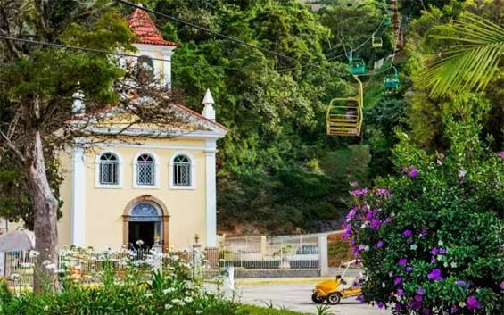
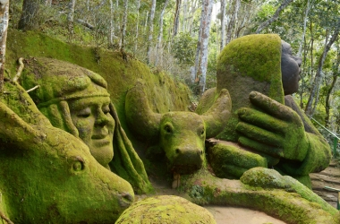
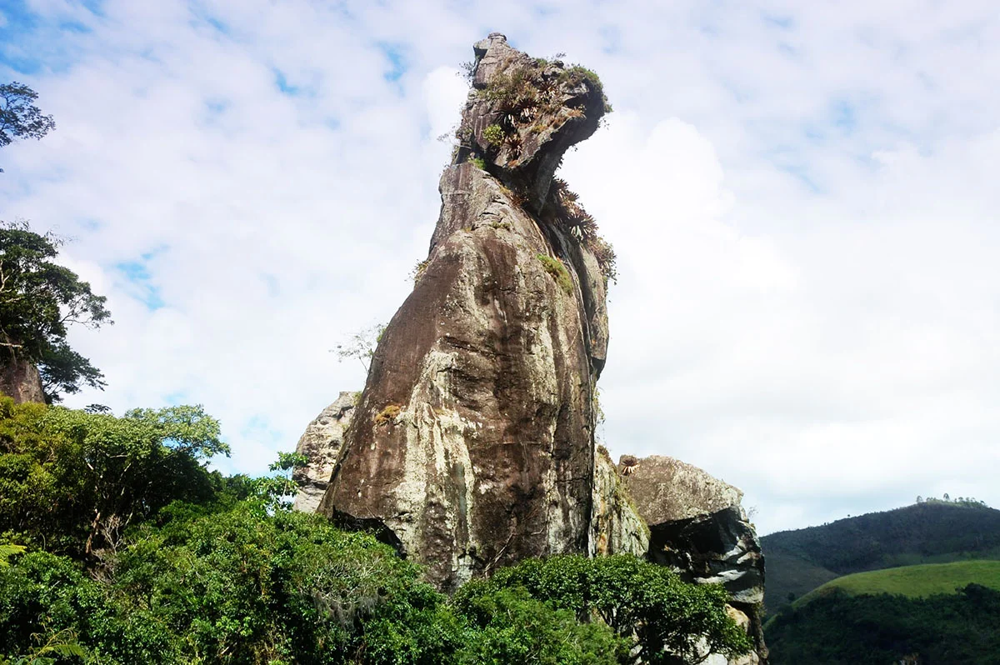

- Pontos turisticos
Casa Suíça: Em 1996 surgiu a Casa Suíça na cidade de Nova Friburgo. Abrigando uma boutique de souvenir, livros, o teatro Pierre Käelin e uma biblioteca, o espaço cultural se tornou pequeno para o tanto de conhecimento que abrigava. Você ainda poderá encontrar por lá uma loja de queijos e chocolates, uma lanchonete e um restaurante que complementam o local.

Teleférico: Um passeio de Teleférico para duas pessoas por cadeira a partir de R$:50,00 com uma casa de jogos em cima, além de comidas, bebidas e apreciação da paisagem.

Três picos: Parque Estadual dos Três Picos (PETP); O seu nome evoca os Três Picos de Friburgo, imponente conjunto de montanhas graníticas cuja altitude chega a 2 366 metros[1] acima do nível do mar e é o ponto culminante de toda a Serra do Mar. Com uma área aproximada de 65 113 hectares, é o maior parque estadual do Rio de Janeiro, abrangendo porções dos municípios de Cachoeiras de Macacu, Teresópolis, Nova Friburgo, Silva Jardim, e Guapimirim.

Country Club : Há mais de 180 mil metros quadrados de jardins deslumbrantes. Um museu vivo de plantas raras nativas e exóticas, vindas de diversas partes do mundo. Gansos, patos e uma infinidade de espécies de pássaros complementam a bela paisagem formada pelos lagos e suas raras espécies de plantas. Além de uma arquitetura secular que existe desde a época do barão de Nova Friburgo, uma vez que o Country era sua casa.

Jardim do Nego: O Jardim do Nêgo é um museu de escultura a céu aberto localizado no distrito de Campo do Coelho, na estrada RJ-130 (Estrada Friburgo-Teresópolis), no município brasileiro de Nova Friburgo. Criado pelo artista plástico Geraldo Simplício, conhecido como Nêgo, o espaço se destaca por suas impressionantes esculturas esculpidas diretamente nos barrancos de terra, integrando arte e natureza de maneira singular

Espaço Arp: Fundada pelo imigrante suíço Peter Julius Ferdinand Arp em 1938, a antiga fábrica Arp produzia rendas artesanais de alta qualidade. Ela desempenhou um papel significativo na economia local, empregando muitos trabalhadores, especialmente mulheres, que eram habilidosas na produção de rendas. A fábrica contribuiu para a reputação da cidade como um centro de produção de rendas de alta qualidade. No entanto, com o tempo, a indústria enfrentou desafios devido à concorrência e à mudança nos padrões de consumo. A fábrica Arp, como muitas outras empresas de renda artesanal, enfrentou dificuldades financeiras e fechou as portas em 2011. No seu lugar surgiu o Espaço Arp, um concorrido espaço de multi-empresas que inclui lojas, escritórios, consultórios, restaurantes, cafeterias e mercado local com produtos 100% friburguenses.

Cão Sentado: A MAIOR PEDRA EM FORMA DE CÃO SENTADO DO MUNDO (Altura 111 metros). VALOR DA ENTRADA R$25,00 - CRIANÇAS ATÉ 6 ANOS NÃO PAGAM - CRIANÇAS NO COLO NÃO PODEM SUBIR A TRILHA - . HORÁRIO DE 9 A 17 HORAS - ESCALADA DE 9 A 15 HORAS. ESPORTES RADICAIS FUNCIONANDO. " SOMENTE PODERÃO ENTRAR ANIMAIS DE PEQUENO/MÉDIO PORTE (MANSOS) "
